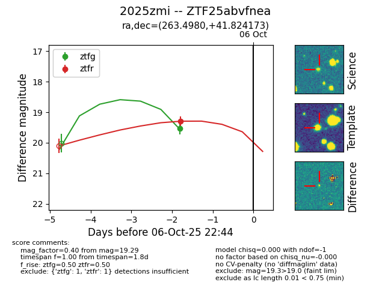
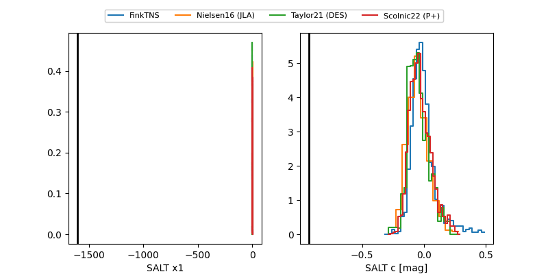

FINK: ZTF25abvfnea
Lasair: ZTF25abvfnea
ALeRCE: ZTF25abvfnea
TNS: 2025zmi
YSE: 2025zmi
ZTF25abvfnea (ztf,fink)
2025zmi (tns,yse)
equatorial (ra, dec) = (263.4980,+41.82417)
galactic (l, b) = (67.3011,+31.59727)


last ztfg=19.53, ztfr=19.29
1 ztfg, 1 ztfr detections